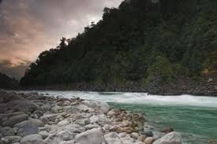

Siang lake

Siang District is the 21st district of Arunachal Pradesh State, India. This district was created by bifurcating West Siang and East Siang districts of Arunachal Pradesh consisting of 32-Rumgong-Kaying and 35-Boleng-Pangin Constituencies. The district was inaugurated on 27 November 2015 by Chief Minister Nabam Tuki.[1].
The name of the district is derived from the mighty Brahmaputra River, which in Arunachal Pradesh is known as the Siang river. It is predominantly inhabited by Adi tribe of Arunachal Pradesh.

HOW TO REACH ?
Nearest Airport:Siang
Nearest Railway Station:Siang
Nearest Bus Stand:Siang